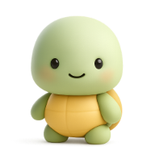

1A new group, four people in


Sunday Supper4 people
AnaPriyaJoshMinaOne picture of all four. About half a minute.
2Two drawings, keep one
Sunday Supper4 people
Loop Ink+
Pick your favorite.
The other one is let go.
3The group wears it
Sunday Supper5 people
AnaPriyaJoshMina
Leo joined